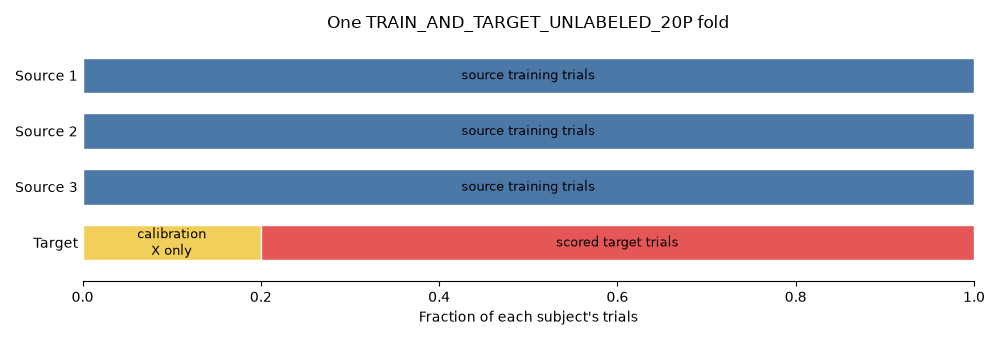
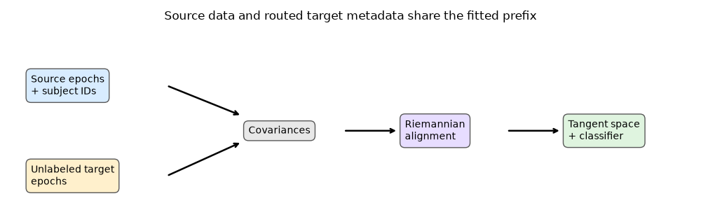
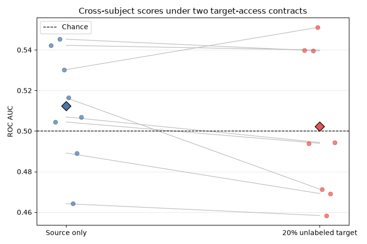

Note
Go to the end to download the full example code.
Cross-subject transfer with Riemannian alignment#
A cross-subject benchmark asks whether a model trained on several people can generalize to a person it has never seen. This is harder than a random train/test split because EEG covariance matrices vary substantially between people, even when they perform the same task.
This tutorial introduces a target-aware alternative inspired by Riemannian Procrustes Analysis (RPA) [1]. We will:
separate source, target-calibration, and target-test trials;
recenter each subject’s covariance matrices on the SPD manifold;
route an unlabeled target slice through a scikit-learn pipeline; and
compare the aligned pipeline with a source-only baseline.
The example focuses on the recentering step of RPA. Full RPA also includes scaling and rotation. Keeping one operation here makes both the geometry and MOABB’s transfer-learning interface visible.
# Authors: Anton Andonov <toncho11@gmail.com>
# Bruno Aristimunha <b.aristimunha@gmail.com>
#
# License: BSD (3-clause)
import matplotlib.pyplot as plt
import numpy as np
import pandas as pd
from matplotlib.patches import Rectangle
from pyriemann.estimation import Covariances
from pyriemann.preprocessing import Whitening
from pyriemann.tangentspace import TangentSpace
from sklearn import config_context
from sklearn.base import BaseEstimator, TransformerMixin
from sklearn.linear_model import LogisticRegression
from sklearn.pipeline import make_pipeline
from moabb.datasets.fake import FakeDataset
from moabb.evaluations import CrossSubjectEvaluation
from moabb.evaluations.protocols import CrossSubjectMode
from moabb.paradigms import LeftRightImagery
The cross-subject transfer protocol#
Leave-one-subject-out evaluation repeats the following experiment: choose one
person as the target and train on all remaining source subjects. A standard
TRAIN fold exposes no target trial during fitting.
A target-aware mode divides the held-out subject into two parts. For
TRAIN_AND_TARGET_UNLABELED_20P, the first 20% of every target session may
be used without labels to estimate an alignment reference. The remaining 80%
are untouched until scoring. Thus the calibration trials are neither source
training samples nor test samples.
fig, ax = plt.subplots(figsize=(10, 3.4))
colors = {"source": "#4C78A8", "calibration": "#F2CF5B", "test": "#E45756"}
for row, subject in enumerate(["Source 1", "Source 2", "Source 3", "Target"]):
if subject == "Target":
pieces = [
(0.0, 0.2, "calibration\nX only", "calibration"),
(0.2, 0.8, "scored target trials", "test"),
]
else:
pieces = [(0.0, 1.0, "source training trials", "source")]
for left, width, label, role in pieces:
ax.add_patch(
Rectangle(
(left, row - 0.32), width, 0.64, facecolor=colors[role], edgecolor="white"
)
)
ax.text(left + width / 2, row, label, ha="center", va="center", fontsize=9)
ax.set(
xlim=(0, 1),
ylim=(-0.7, 3.7),
yticks=range(4),
yticklabels=["Source 1", "Source 2", "Source 3", "Target"],
xlabel="Fraction of each subject's trials",
title="One TRAIN_AND_TARGET_UNLABELED_20P fold",
)
ax.invert_yaxis()
for spine in ("top", "right", "left"):
ax.spines[spine].set_visible(False)
ax.tick_params(axis="y", length=0)
fig.tight_layout()
plt.show()

Why align covariance matrices?#
A trial with \(p\) EEG channels is summarized by a \(p \\times p\) symmetric positive-definite (SPD) covariance matrix \(C\). SPD matrices do not form a flat Euclidean space, so their average is represented by a Riemannian mean.
For a domain \(d\) (one source subject or the target subject), let \(G_d\) be its Riemannian mean. Recentering applies
The Riemannian mean of the transformed domain is the identity matrix. Each subject therefore keeps its trial-to-trial structure while a large part of its subject-specific covariance offset is removed.
At training time, every source trial must use the reference of its own
subject. At prediction time, every held-out trial must use the target
reference estimated from the permitted unlabeled calibration slice. These
two paths explain why the transformer defines both fit_transform and
transform.
class RiemannianAlignment(TransformerMixin, BaseEstimator):
"""Recenter source and target covariance matrices by domain."""
def fit(self, X, y=None, *, subjects=None, X_target_unlabeled=None):
if subjects is None or X_target_unlabeled is None:
raise ValueError(
"RiemannianAlignment needs `subjects` and `X_target_unlabeled` metadata."
)
X = np.asarray(X)
subjects = np.asarray(subjects)
self.source_whiteners_ = {
subject: Whitening(metric="riemann").fit(X[subjects == subject])
for subject in np.unique(subjects)
}
self.target_whitener_ = Whitening(metric="riemann").fit(
np.asarray(X_target_unlabeled)
)
return self
def fit_transform(self, X, y=None, *, subjects=None, X_target_unlabeled=None):
"""Fit domain references and align the source training trials."""
self.fit(X, y, subjects=subjects, X_target_unlabeled=X_target_unlabeled)
subjects = np.asarray(subjects)
X_aligned = np.empty_like(X)
for subject, whitener in self.source_whiteners_.items():
mask = subjects == subject
X_aligned[mask] = whitener.transform(X[mask])
return X_aligned
def transform(self, X):
"""Align unseen trials with the target reference."""
return self.target_whitener_.transform(X)
Route the target slice through the pipeline#
MOABB initially owns raw EEG epochs for both source and target trials. The
alignment step, however, sits after Covariances and therefore expects SPD
matrices. Scikit-learn’s metadata routing handles this representation change:
set_fit_requestdeclares the two fields consumed by the alignment step;transform_input=["X_target_unlabeled"]sends the target slice through the already-fitted pipeline prefix before delivering it to that step.
Consequently, RiemannianAlignment.fit receives source covariances as
X and target covariances as X_target_unlabeled. No MOABB-specific
pipeline class is needed. pyRiemann 0.12 marks the stateless
Covariances transformer as fitted, so it works directly with
transform_input.
with config_context(enable_metadata_routing=True):
alignment = RiemannianAlignment().set_fit_request(
subjects=True, X_target_unlabeled=True
)
aligned_pipeline = make_pipeline(
Covariances("oas"),
alignment,
TangentSpace(metric="riemann"),
LogisticRegression(max_iter=500),
transform_input=["X_target_unlabeled"],
)
source_only_pipeline = make_pipeline(
Covariances("oas"), TangentSpace(metric="riemann"), LogisticRegression(max_iter=500)
)
The resulting data flow is compact: metadata is transformed only until the
step that requests it, while the ordinary source X continues through the
complete pipeline.
fig, ax = plt.subplots(figsize=(10, 3.2))
ax.axis("off")
nodes = [
(0.03, 0.68, "Source epochs\n+ subject IDs", "#D8ECFF"),
(0.03, 0.20, "Unlabeled target\nepochs", "#FFF0CC"),
(0.35, 0.44, "Covariances", "#E8E8E8"),
(0.58, 0.44, "Riemannian\nalignment", "#E7DDFF"),
(0.82, 0.44, "Tangent space\n+ classifier", "#DFF4DF"),
]
for x, y, label, color in nodes:
ax.text(
x,
y,
label,
ha="left",
va="center",
bbox={"boxstyle": "round,pad=0.5", "facecolor": color, "edgecolor": "0.35"},
)
for start, end in [
((0.23, 0.68), (0.34, 0.52)),
((0.23, 0.20), (0.34, 0.38)),
((0.49, 0.44), (0.57, 0.44)),
((0.73, 0.44), (0.81, 0.44)),
]:
ax.annotate("", xy=end, xytext=start, arrowprops={"arrowstyle": "->", "lw": 1.8})
ax.set_title("Source data and routed target metadata share the fitted prefix")
fig.tight_layout()
plt.show()

Run the two benchmark contracts#
A deterministic FakeDataset keeps the tutorial
fast and download-free. Its scores have no scientific meaning; it is used to
expose the complete evaluation path.
The baseline uses TRAIN and therefore sees no target data during fitting.
The aligned pipeline uses TRAIN_AND_TARGET_UNLABELED_20P. Recording the
mode next to every result is essential because the two scores answer different
questions and use different numbers of scored target trials.
dataset = FakeDataset(["left_hand", "right_hand"], n_subjects=4, n_sessions=2, seed=42)
paradigm = LeftRightImagery()
baseline = CrossSubjectEvaluation(
paradigm=paradigm,
datasets=[dataset],
cs_mode=CrossSubjectMode.TRAIN,
overwrite=True,
suffix="rpa_source_only",
).process({"Source only": source_only_pipeline})
baseline["protocol"] = "Source only"
aligned = CrossSubjectEvaluation(
paradigm=paradigm,
datasets=[dataset],
cs_mode=CrossSubjectMode.TRAIN_AND_TARGET_UNLABELED_20P,
overwrite=True,
suffix="rpa_unlabeled_20p",
).process({"Riemannian alignment": aligned_pipeline})
aligned["protocol"] = "20% unlabeled target"
results = pd.concat([baseline, aligned], ignore_index=True)
print(
results.groupby(["protocol", "pipeline"])["score"]
.agg(["mean", "std", "count"])
.round(3)
)
/home/runner/work/moabb/moabb/moabb/analysis/results.py:189: H5pyDeprecationWarning: Creating a dataset without passing data or dtype is deprecated. Pass an explicit dtype. Using dtype='f4' will keep the current default behaviour.
dset.create_dataset(
/home/runner/work/moabb/moabb/moabb/analysis/results.py:189: H5pyDeprecationWarning: Creating a dataset without passing data or dtype is deprecated. Pass an explicit dtype. Using dtype='f4' will keep the current default behaviour.
dset.create_dataset(
mean std count
protocol pipeline
20% unlabeled target Riemannian alignment 0.502 0.036 8
Source only Source only 0.512 0.027 8
Inspect paired target results#
Each thin line below connects the same held-out subject and session. The diamonds show pipeline means. With a real dataset, this pairing is useful because subject difficulty often dominates the score variation.
Do not interpret the random ranking produced by FakeDataset. A proper
study would repeat the benchmark over real datasets and compare methods under
the same target-access protocol. In particular, a source-only score and a
20%-calibration score should never be presented as if they had identical
information budgets.
paired = results.pivot(index=["subject", "session"], columns="protocol", values="score")
order = ["Source only", "20% unlabeled target"]
colors = ["#4C78A8", "#E45756"]
fig, ax = plt.subplots(figsize=(7.5, 5))
for row in paired[order].dropna().to_numpy():
ax.plot([0, 1], row, color="0.75", linewidth=1, zorder=1)
for position, (protocol, color) in enumerate(zip(order, colors, strict=True)):
values = paired[protocol].dropna().to_numpy()
offsets = np.linspace(-0.06, 0.06, len(values))
ax.scatter(position + offsets, values, color=color, alpha=0.7, zorder=2)
ax.scatter(
position,
values.mean(),
marker="D",
s=95,
color=color,
edgecolor="black",
zorder=3,
)
ax.axhline(0.5, color="black", linestyle="--", linewidth=1, label="Chance")
ax.set(
xticks=[0, 1],
xticklabels=order,
ylabel="ROC AUC",
title="Cross-subject scores under two target-access contracts",
)
ax.grid(axis="y", alpha=0.25)
ax.legend()
fig.tight_layout()
plt.show()

References#
Total running time of the script: (0 minutes 6.175 seconds)
Run this example